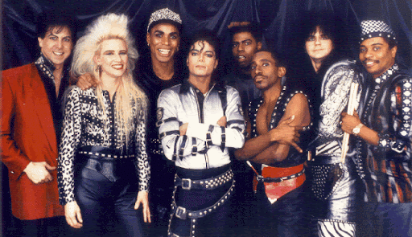
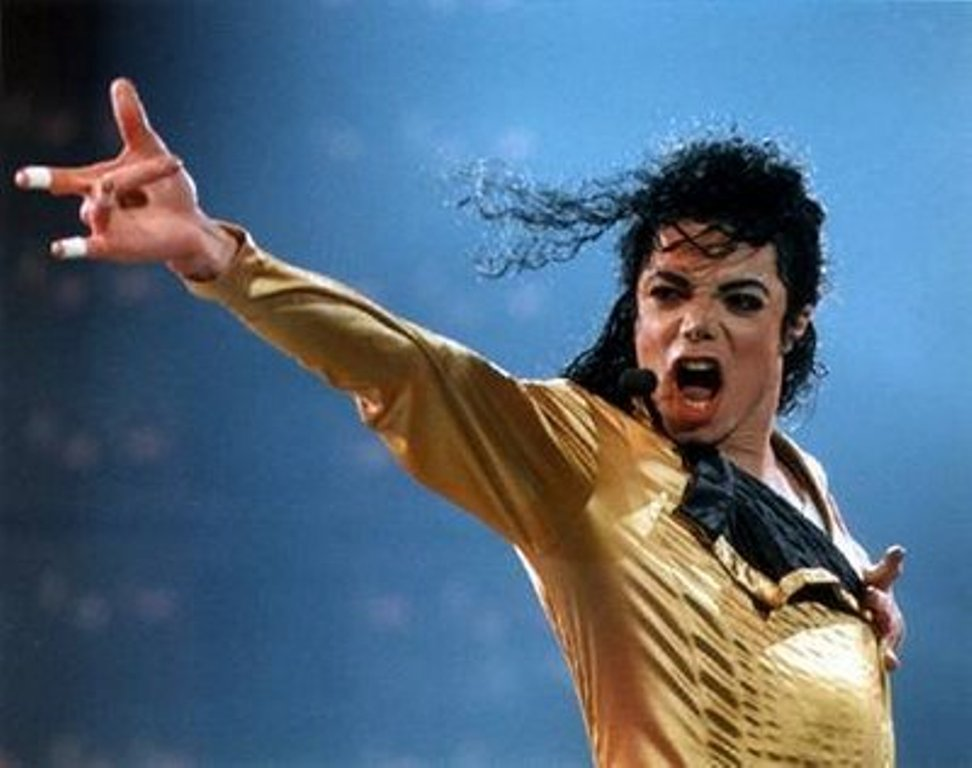
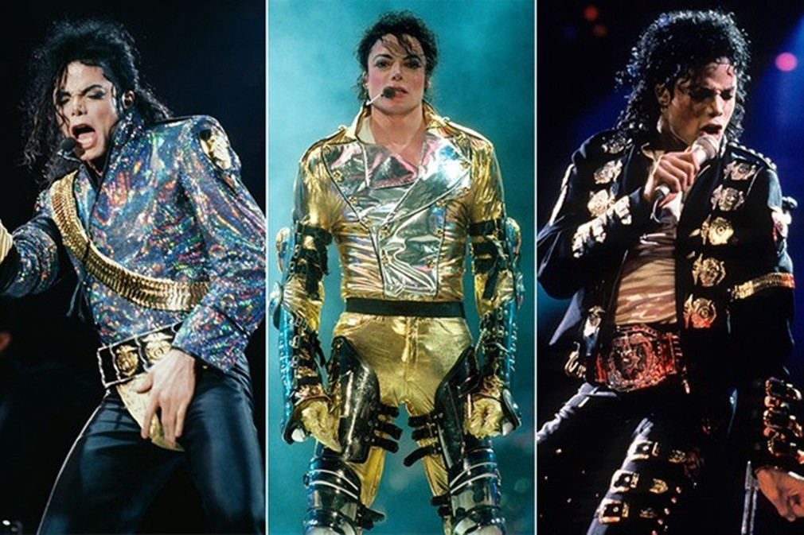
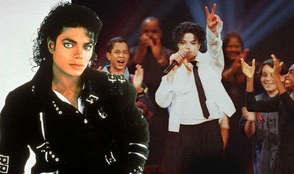
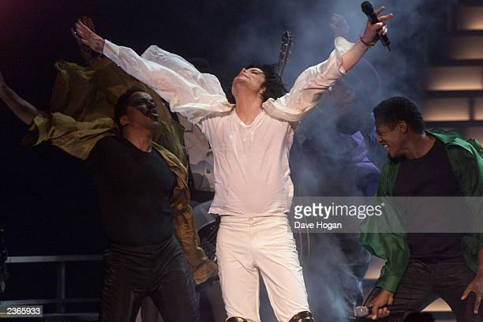
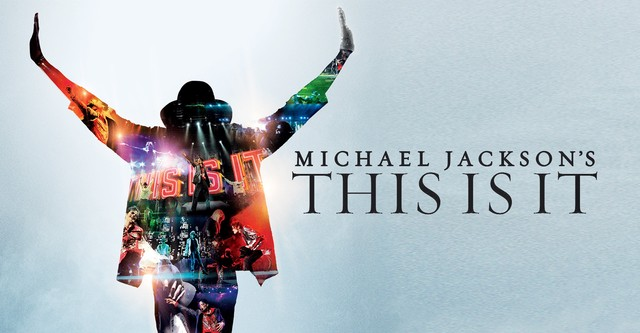

O Bad World Tour foi o primeiro show solo de Jackson. Começando em Tóquio, a turnê durou 16 meses, durante os quais Jackson visitou 15 países e se apresentou para quase 4,5 milhões de pessoas. Sete shows esgotados no Wembley Stadium de Londres atraíram mais de meio milhão de pessoas, incluindo Diana, Princesa de Gales e Charles, Príncipe de Gales — estabelecendo um novo recorde mundial por tocar mais datas no estádio do que qualquer outro artista. A turnê Bad foi mais tarde reconhecida como a turnê com maior participação e mais ganhos de todos os tempos, arrecadando mais de 125 milhões de dólares
Os shows do Dangerous World Tour atraíram mais de 4 milhões de fãs. A extravagante encenação do set para os shows levou quase três dias para ser montada; 20 caminhões com equipamentos foram transportados em aviões de carga para países ao redor do mundo. A turnê terminou na Cidade do México, com cinco shows esgotados para mais de quinhentas mil pessoas, com o último show em 11 de novembro de 1993
Começando em Praga em 7 de setembro de 1996, a série de shows atraiu mais de 4,5 milhões de fãs de 58 cidades em 35 países ao redor do mundo. Foi a turnê mais frequentada de todos os tempos por qualquer artista, arrecadando mais de 165 milhões de dólares. O comparecimento médio ao concerto foi de 54 878. O HIStory World Tour concluiu em Durban em 15 de outubro de 1997.
Uma turnê com o objetivo de ajudar a arrecadar fundos para crianças em Kosovo, na África e em outros lugares. Jackson fez dois shows durante a turnê. O primeiro ocorreu em Seul, Coreia do Sul em 25 de junho, e o segundo foi em Munique, Alemanha. Jackson foi acompanhado por um colaborador de longa data, Slash, durante os dois shows
Em 1999, foi anunciado que Jackson planejava ser a atração principal de dois shows na Véspera de Ano Novo de 1999 para marcar o novo milênio, começando com um evento em Sydney, Austrália, e depois viajando para um segundo evento em Aloha Stadium em Honolulu, Estados Unidos no final do dia. Como o Havaí está 20 horas atrás da Austrália e do outro lado da Linha Internacional de Data, a intenção dos shows era fazer com que Jackson se apresentasse em um dos primeiros países a celebrar o ano novo e, em seguida, um dos últimos. No entanto, em outubro, foi anunciado que os shows foram cancelados, com seu promotor afirmando que Jackson não queria interromper o trabalho em andamento em seu próximo álbum. Os críticos também duvidaram se Jackson seria capaz de voar a tempo devido às restrições de voos noturnos na Austrália.
Michael Jackson: 30th Anniversary Celebration foram dois shows realizados em 2001. O objetivo das apresentações era marcar o trigésimo aniversário de Jackson como artista solo. Ambos os shows aconteceram no Madison Square Garden na cidade de Nova Iorque. Esta seria a última apresentação pública de Jackson como artista solo e sua apresentação final com seus irmãos.
This Is It foi uma série planejada de cinquenta shows de Michael Jackson a serem realizados na The O2 Arena em Londres, Reino Unido. Jackson anunciou oficialmente os shows em uma coletiva de imprensa realizada dentro da Arena O2 afirmou que This Is It seria sua última série de shows. Eles estavam programados para começar em julho de 2009 e continuar até março de 2010. No entanto, com todos os shows esgotados, Jackson sofreu uma parada cardíaca e morreu devido a uma overdose de propofol e benzodiazepínicos, menos mais de três semanas antes do início do primeiro show.
